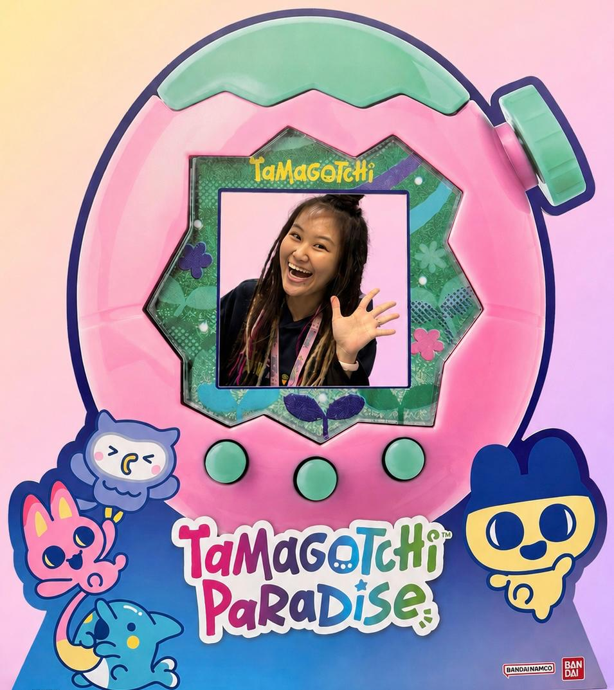

Founded in 2015 by a Tamagotchi lover, Rachel Liew. My mission is to share my love for Tamagotchis with all Tamagotchi fans worldwide.

This site is for Tamagotchi lovers to look up translation guides, tips, and tricks.
Ever since I was a kid, I have always been interested in digital pets. When I was 7, my parents got me my very first v-pet (it was a Dinkie Dino). Somehow, knowing that I had a constant companion that I could bring with me ANYWHERE I went gave me a sense of comfort and security, knowing that I was never alone. As I grew into my teenage years, and eventually adulthood, Tamagotchis always played a part in my life. Even now as an adult, I ALWAYS carry at least one Tamagotchi with me as an emotional support.
Till date, I own about 200 Tamagotchis. My dream is to own a Tamagotchi Station one day!